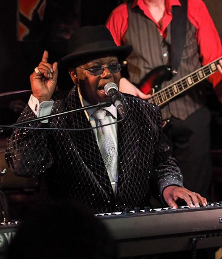
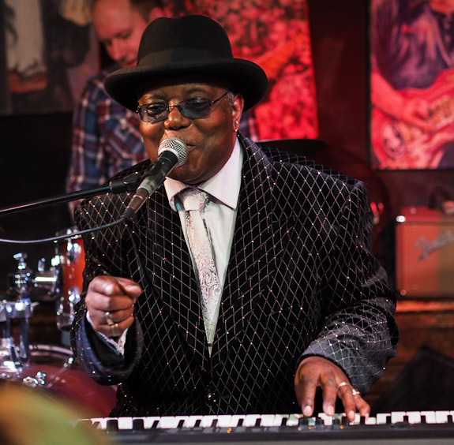
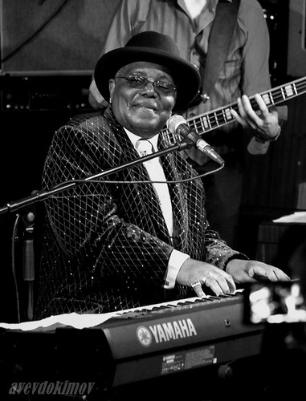

Kenny Blues Boss Wayneинтервью в клубе "BB KING", Москва, 30 октября 2015 г.Программа "Весь Этот Блюз" - Мне было 8 лет. Я начинал в церкви. Мой отец был проповедником в церкви. А я начал играть на фортепиано. Мои первые уроки были по классике. Я учился читать ноты. Это продолжалось два года, потому что мы переехали. По большей части я играл со слуха. Ни музыканты в церкви, ни хор – ни у кого не было нот. Я слушал церковную музыку, юношеский хор. С этого я начал разучивать песни. Мой дядя, у него были пластинки, блюзовые пластинки… И я слышал Дюка Эллингтона, Каунта Бейси, БиБи и Рея Чарлза. Я начал слушать эти пластинки, когда мне было, может быть, двенадцать. Но главное, я слушал те песни, которые играла моя мама. Это были Билли Холидей, Нина Симоун, такие джазоватого типа вещи. Я подбирал вещи по слуху. И по большей части это был Рэй Чарлз. Это было в начале 50-х. Не, я начал его слушать в конце 50-х. Но у нас был Луи Армстронг, Элла Фитцджеральд. У нас не было старых пластинок. Но дядя любил Эллу, потому что она была изысканной... Джазоватой. Он любил Джо Вилльямса. Не Большого Джо Вилльямса, а того, кто играл с Каунтом Бейси. Он любил изысканный блюз, а не блюз из музыкальных автоматов. Мы жили в Новом Орлеане с тех пор, как я был младенцем, и до тех пор, как мне исполнилось 7 лет. Потом моего папу уволили из армии, и мы переехали в Сан-Франциско. А потом по церковным делам мы оказались в Лос-Анджелесе. Я был очень молод, но я помню, как я ходил на новоорлеанские карнавалы. И я помню там парня за пианино, он играл, и, как я помню, он играл очень быстро, и он просто говорил со мной. Он говорил, не смотрел на свои руки. И это было поразительно. Я смотрел на него, он смотрел на меня и задавал вопросы, а я был очарован, что его руки так быстро гуляли по клавишам. Это была музыка типа дикси-ленда. Я такую никогда не играл, но… Это меня вдохновило попробовать играть на фортепиано. Буги-вуги очень похоже на то, чем является мятеж. - Буги-вуги - то же самое, что госпел?! Да!.. Потому что (показывает ритм). Это тот же мир. Очень многие пианисты, кто играли буги-вуги, могли играть и госпел. И блюз был очень близок по стилю игры. Единственная разница в том, что в буги-вуги можно было взять тему из популярной песни и играть ее правой рукой. А в госпел (напевает темы) – это очень близко к буги-вуги. Определенно, и буги-вуги, и блюз пришли из церкви с госпелом. В основе у них одно. Разница в том, то вы поете о разных вещах. Но в игре на фортепиано это примерно одно и то же. Госпел-исполнители могли легко играть буги-вуги. Некоторые в это не верят, но те клавишники, что играли госпел в церкви, легко могли сыграть буги-вуги. А те ребята, кто играли блюз, не смогли бы сыграть госпел в церкви, но исполнители госпел легко сыграли бы блюз! В этом вся разница. А мне легко было играть… Я не начинал играть буги-вуги до 1960-го года. Я не записывал буги-вуги, потому что мне казалось, для них нет слушателей. Буги-вуги были не особо популярны в США. Они популярны в Европе, но не в США, так что… Так было, пока молодой парень из Германии, который и сам играл на пианино, не организовал концерт и он хотел, чтобы я играл буги-вуги. Он сам учился по классике, но он хотел слышать буги-вуги. Но я сказал - нет, я не буду играть буги-вуги весь вечер, может два-три номера, не больше. А он сказал - ну, попробуем. У нас три пианиста, мы начали играть буги-вуги. И нас слушали 2000 человек! Я не хотел играть буги-вуги, но он доказал мне, что есть слушатели! И я обнаружил, что в Европе - в Германии, во Франции, в Швейцарии – есть люди, которые пригласят меня на фестивали буги-вуги. Там много людей, кто любят буги-вуги. До этого я просто иногда сочинял песни в стиле буги-вуги, блюзового типа. - На ваших альбомах я слышу буги-вуги в современном стиле. Отполированные. А на ваших концертах они звучат более традиционно. Это такая музыкальная анархия, что ли, что-то разнузданное… Это правда. Когда я в студии, нет чувства слушателя. Но когда на концерте есть слушатели, все выходит наружу. Иногда в студии я пытаюсь себя заставить, но как надо не получается. А с аудиторией – все отлично! - То есть на концертах вам важна подпитка от слушателей? Да, да. Это особенное чувство. Я не пытаюсь втиснуть песню в три-четыре минуты. На концерте можно хоть десять минут! - Зависит от настроения? Зависит от настроения! Мне не надо думать, сколько песен надо записать. Потому что длинная долгая пластинка – это не то, что нам нужно. Но буги я все-таки записываю, хоть одну. Глушим свет, и я просто буги! - Почему так много популярных гитаристов? Есть популярные харперы… А пианисты, которые были когда-то самыми популярными, сейчас почти неизвестны широкой аудитории… Почему?.. Это правда. У каждого инструмента – своя очередь. Еще были времена, когда труба и саксофоны правили балом. Потом были пианисты. Теперь гитары. Может, ребятишкам больше интересны гитары, потому что они такие. Вы можете двигаться. Вы размахиваете гитарой, как топором. А с фортепиано вы сидите, вы на месте. Двигаются ваши пальцы. А с гитарой вы весь на виду. Можно прыгать… - Устраивать шоу? Да! Может, это интересно. Гитаристам не обязательно учить классическую музыку для того, чтобы знать, как играть блюз. На фортепиано – если вы не благославлены даром свыше – вам нужно учиться основам. Ка ставить пальцы, например. Я думаю, тут все по-другому. Если бы я начал все сначала, я бы выбрал гитару. Но эти струны – для меня слишком болезненны. И у нас дома всегда было пианино. И я этим доволен. Но ты прав – все хотят гитаристов. Но, знаешь сейчас много молодых, кто заинтересован в буги-вуги. Они хотят играть что-то быстрое. Это их будоражит. Не хотят они играть медленный блюз. Гитаристы играют медленный блюз. Но есть разница. Пианино очень годится для сочинения песен. Можно расписать аранжировки.  В блюзе я начал слушать Фэтса Доминоу. Я слушал блюзовых исполнителей типа…. Я слушал Отиса Спэна, Рузвельта Сайкса, Джея Мак-Шенна… я не многих слушал из блюза, я слушал джазовых музыкантов, типа Эрла Гоннера, мне нравился его стиль, Джина Хэрриса – это были джазовые музыканты, которые прекрасно исполняли блюз. Я слушал их, чтобы выучить песни, а не копировать их манеру. По большей части то, что я играю, идет от знания госпел, в этом ключ к тому, чтобы играть в разных стилях. А песни можно и выучить. - На пластинках вы используете электронные клавиши? Да, в моих песнях звучит орган. Но где-то фоном. Сам я предпочитаю фортепиано. С виду может показаться, что они одинаковые, но стиль игры совершенно разный. Это как акустическая гитара и электрическая. Но органе ты играешь по-другому, и звук выходит другим. А на фортепиано чувство идет от твоих пальцев. Так что с виду клавиатура похожа, но это не одно и то же. Некоторые пианисты вообще не могут играть на органе. А органисты не играют на фортепиано. Прикосновение другое. Ощущение. Но на записи я использую орган. Я на нем играю. Мне нравится орган, но не на первом плане. - Вы работали с Дюком Роббилардом и как с продюсером, и как с гитаристом... Я работал (на записи) с Дюком Роббилардом, и хотел бы поработать снова. Он очень прост. Удивительно, перед записью он меня спросил, можно ли ему сыграть в двух-трех песнях. Я ответил «Йес!» хоть на всех! Он такой хороший. Пусть играет на всех!.. - Он владеет всеми стилями... Это точно, да. И это очень подстегивает в работе, он может сыграть в любом стиле. Он слушает песню, и сразу говорит, ага, и подбирает нужную гитару! Он говорит, сюда нужна вот эта гитара. Я в гитарах не смыслю, просто говорю «ок». Я записываюсь под акустическое фортепиано, мне нравится акустическое пианино. На электрическом играю, когда на гастролях. Если нет фортепиано, приходится играть на электрическом. Но в студии я играю на акустическом.  Профессионально я начал играть в 60-х. Потребовались многие годы, чтобы я записал свой первый альбом. Я сочинял песни, но всегда хотел записать их с группой. А группа была вместе всегда не настолько долго, чтобы прийти на запись. Так что те песни не были записаны. Наконец в 1992 году я решил, что я буду главным в группе. Вот тогда я и начал записываться в студии. Я стал бенд-лидером, а это все меняет. Раньше я был членом группы, даже певцом, но ничего не получалось. Я должен был стать лидером –только тогда все поменялось. Тогда появилась уверенность в себе. И мне не надо было искать работу. Все говорили мне: «просто играй на пианино». Я сделал свою первую пластинку – и это было началом новой жизни. Когда я выхожу на сцену, я чувствую себя прекрасно. Это то, что мне действительно нравится. Мне всегда хотелось на сцену. Мне нравится видеть людей и видеть, что им хорошо. И как они это выражают – это здорово! Я помню, как я был мальчиком, лет, примерно, одиннадцати, и мои родители уходили из дома, а я оставался. И была лампа красного цвета, я ставил ее перед собой, на пианино. И выключал весь другой свет. И я играл под красной лампой допоздна. И я воображал, что люди хлопают. Все для слушателей, все дело в этом. Я вижу людей, они хлопают – это меня волнует. И в конце концов так и случилось. Как блюз пошел по миру?.. В Англию, например, привезли Мадди Вотерса. Тогда еще и «Битлз» не было. Блюз начался с малых мест, и должен был бы остаться там. Но музыканты из Европы услышали эту музыку, и она им понравилась. Они взяли эту музыку и познакомили с ней европейских слушателей. Вот так это все началось. Без этого никуда бы за границы Миссиссиппи это не ушло! Но было ведь что-то особенное в этой музыке? Иначе зачем европейцам слушать ее? Да. Это что-то, что они не знали. И хотели узнать больше. Они хотели понять, как музыка превращается в волшебство. И они это приняли. И сделали блюз известным на весь мир. За это надо европейцам сказать спасибо. В США буги-вуги умерли еще в начале 50-х. Но в Германии и в части Европы подхватили буги-вуги, сохранили в них жизнь. В 50-х свинг-танцы умирали в США, а в Европе их подхватили. Потому что, как я думаю, в Европе любят истории. Американцы не любят историю, им нужно что-то современное. Прям вот новое, в упаковке! Американцы интересуются только небоскрёбами, а в Европе есть здания 15-го века! Европейцы любят старую историю, потому что у них есть старая история. У США история очень недолгая. Сейчас там захотели блюз, потому что он приносит деньги. Эрик Клэптон и прочие. Блюз никогда не умрет, он просто меняет формы. Лично я для себя открыл, что я нравлюсь везде. Единственная разница в том, что в Европе аудитория больше. А в США все смотрят на популярность. В Европе на мой концерт приходят восемьсот человек. В США чтобы собрать столько слушателей, надо быть знаменитостью. Так что единственная разница, которую я чувствую, состоит в том, что в США не придут слушать неизвестного артиста. А в Европе – придут.  Интервью провел и перевел А.В.ЕВДОКИМОВ |